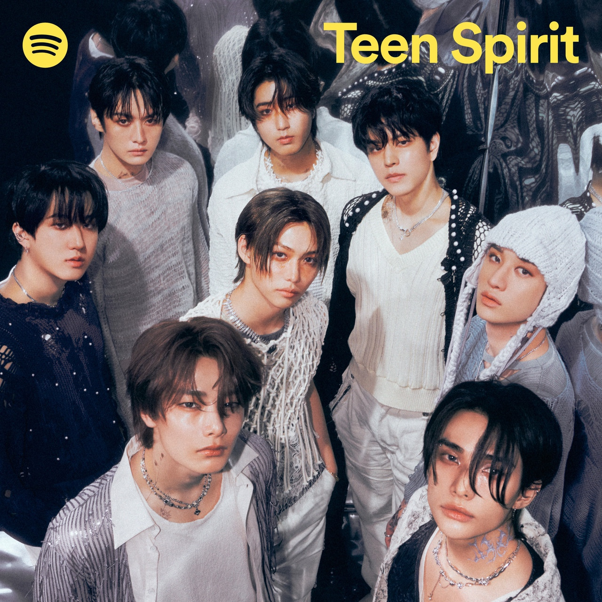
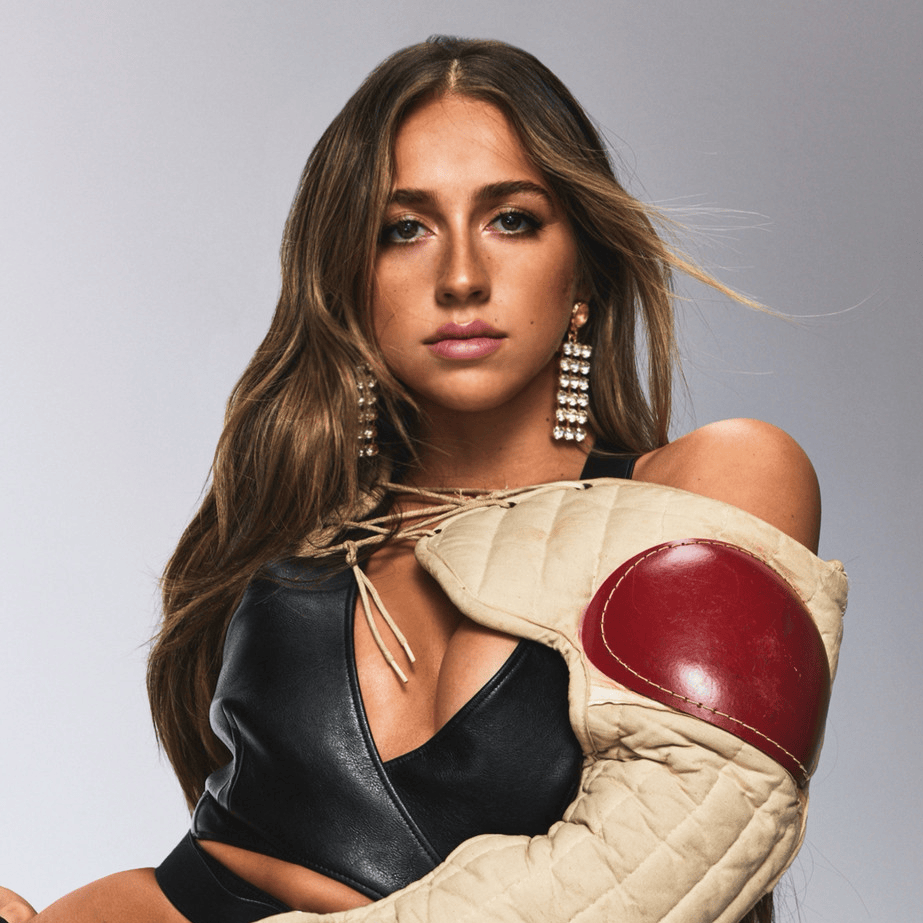

Lollapalooza draws in artists from around the world, from Korea to Palestine, and from LA
to NY lollapalooza has
the best of the best performing. On this page, you will learn more about where the artists are from and how
popular they are!
Stray Kids

Stray kids is a band from Korea, they are currently with 11 million monthly listeners on spotify and they
headlined lollaplooza 2024
SZA
SZA is a solo artist from Maplewood, New Jersey, U.S. She is currently the 17th most streamed artist on Spotify
and she headlined lollaplooza 2024
Tate Mcgray

Tate McRae is a singer from Canada, she currently has over 54 million monthly listeners on Spotify.
Saint Levant
Saint Levant is a singer from Palestine, he currently has over 1 million monthly listeners on Spotify.
Tyla
Tyla is a singer from South Africa, she currently has over 30 million monthly listeners on Spotify.
Megan Thee Stalion
Megan Thee Stallion is a rapper from the United States, she currently has over 33 million monthly listeners
on Spotify.